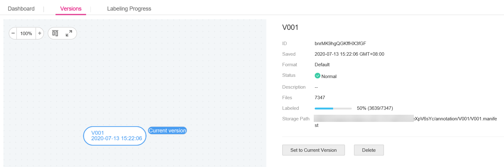

After labeling data, you can publish the dataset to multiple versions for management. For the published versions, you can view the dataset version updates, set the current version, and delete versions. For details about dataset versions, see About Dataset Versions.
For details about how to publish a new version, see Publishing a Dataset.
Viewing Dataset Version Updates
- Log in to the ModelArts management console. In the left navigation pane, choose Data Management > Datasets. The Datasets page is displayed.
- In the dataset list, choose More > Manage Version in the Operation column. The Manage Version tab page is displayed.
You can view basic information about the dataset, and view the versions and publish time on the left.
Figure 1 Viewing dataset versions

Setting to Current Version
- Log in to the ModelArts management console. In the left navigation pane, choose Data Management > Datasets. The Datasets page is displayed.
- In the dataset list, choose More > Manage Version in the Operation column. The Manage Version tab page is displayed.
- On the Manage Version tab page, select the desired dataset version, and click Set to Current Version in the basic information area on the right. After the setting is complete, Current version is displayed to the right of the version name.

Only the version in Normal status can be set to the current version.
Deleting a Dataset Version
- Log in to the ModelArts management console. In the left navigation pane, choose Data Management > Datasets. The Datasets page is displayed.
- In the dataset list, choose More > Manage Version in the Operation column. The Manage Version tab page is displayed.
- Locate the row that contains the target version, and click Delete in the Operation column. In the dialog box that is displayed, click OK.
Deleting a dataset version does not remove the original data. Data and its labeling information are still stored in the OBS directory. However, if it is deleted, you cannot manage the dataset versions on the ModelArts management console. Exercise caution when performing this operation.